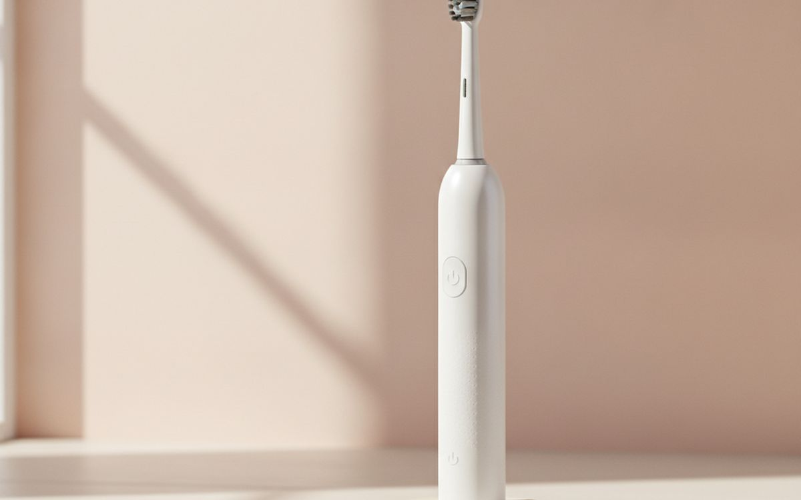
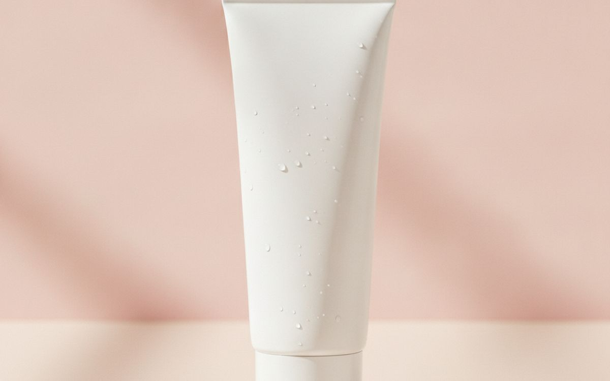
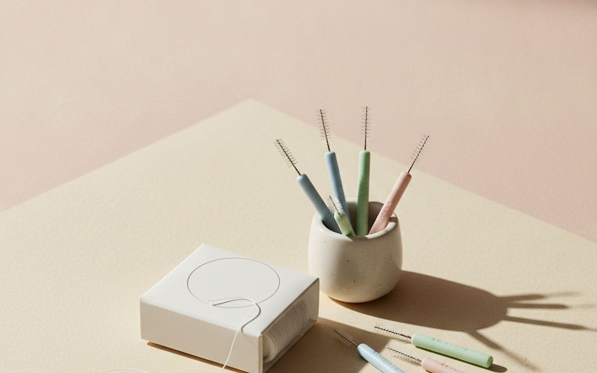
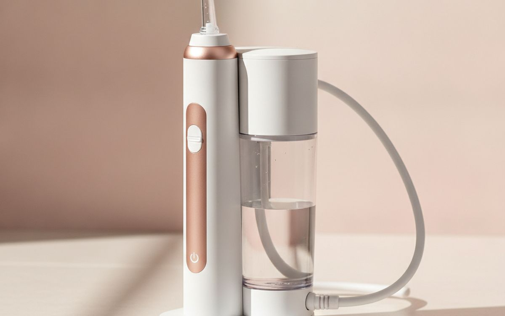
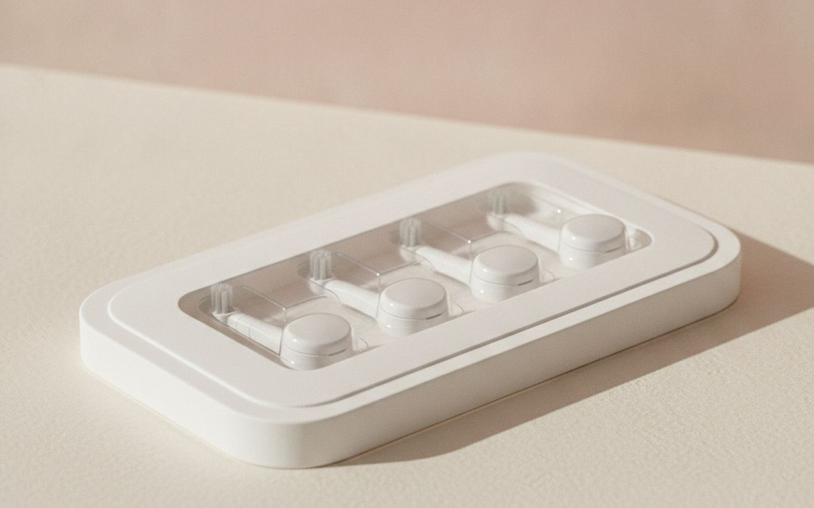
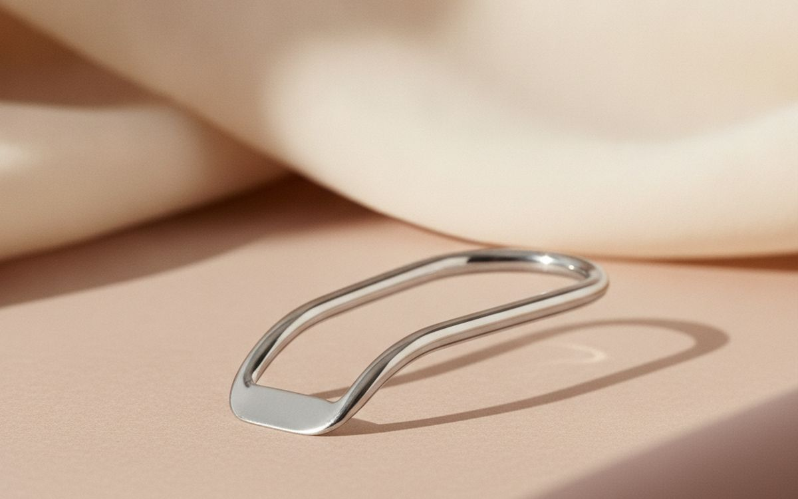
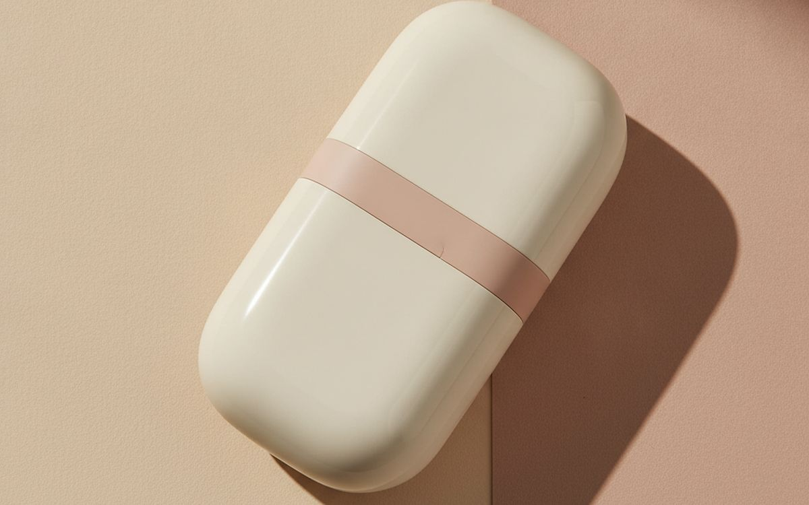
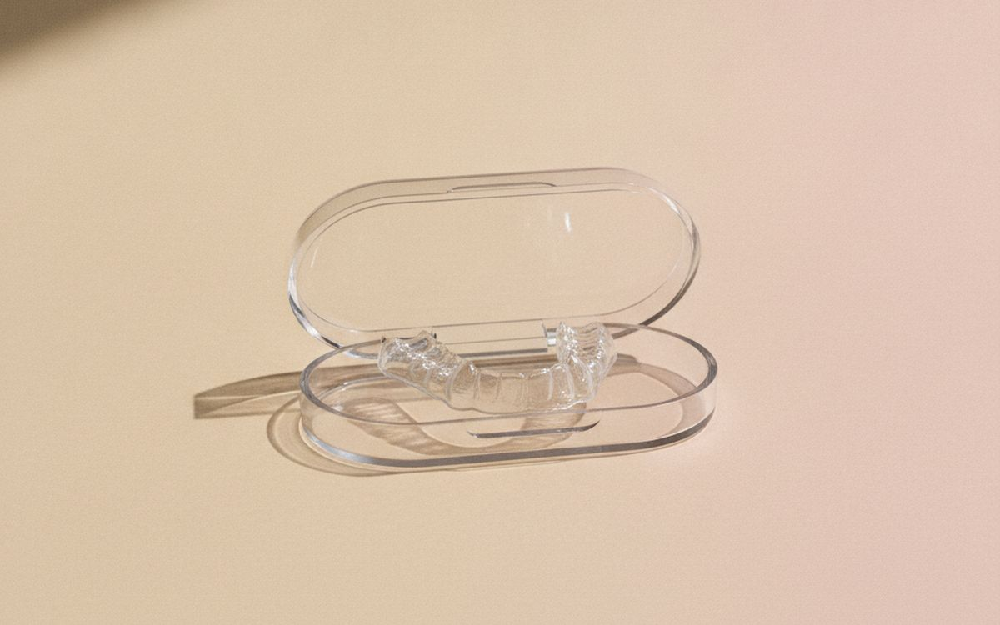
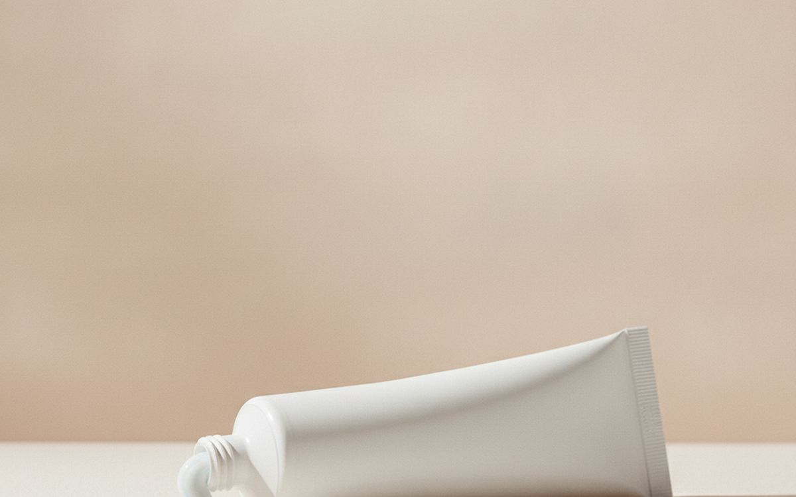
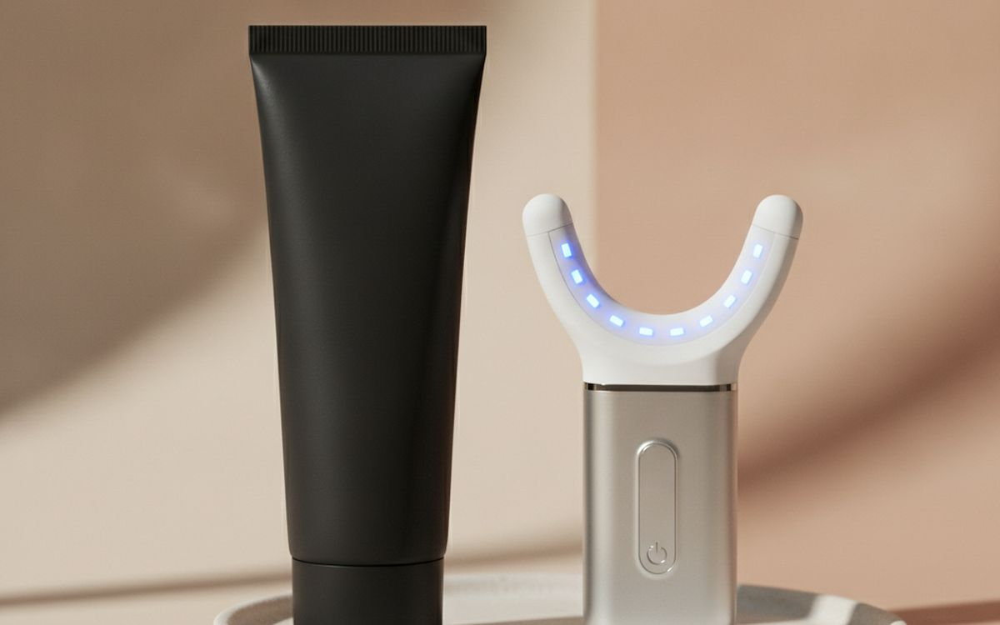

Oral care has become a gadget category, with app-connected toothbrushes, charcoal powders and LED whitening kits. Dentists mostly say the same thing they always have: brush twice a day for two minutes with fluoride toothpaste, clean between your teeth daily, and see a dentist regularly. The useful products are the ones that make those habits easier.
This list is ordered by how much each item helps you do that. An electric toothbrush sits at the top because the built-in timer and pressure sensor fix the two most common mistakes. The gimmicks come at the end, with a plain verdict.
Prices below are approximate street prices at the time of writing and move around constantly, especially during sale events. Treat them as a rough band for budgeting, not a quote. Always check the live listing before you buy.
Kurz gesagt
An electric toothbrush with timer and pressure sensor
The upgrade that fixes technique
Hinweis. Die Links auf dieser Seite sind Affiliate-Links. Wenn Sie darüber kaufen, erhalten wir unter Umständen eine Provision ohne Mehrkosten für Sie. Das beeinflusst weder die Auswahl noch die Reihenfolge dieser Liste.
Wie wir ausgewählt haben
These picks come from dental association guidance, published clinical reviews and long-run owner reports, cross-checked against current retail listings. We have not personally tested every item here. This guide is not dental advice; talk to your dentist about your own teeth and gums.
Auf einen Blick
Die Preise sind Näherungswerte zum Zeitpunkt der Erstellung und ändern sich häufig.
Die Empfehlungen

01 · The upgrade that fixes techniqueAn electric toothbrush with timer and pressure sensor
Most people brush for well under two minutes and press too hard, which wears enamel and gums. A rechargeable electric toothbrush with a two-minute timer and a pressure sensor fixes both. Reviews of the evidence have found oscillating-rotating brushes remove more plaque than manual brushing. You do not need app connectivity or many modes; Oral-B and Philips Sonicare entry models do the job. The case for it: timer ensures two minutes, pressure sensor protects gums, and better plaque removal. The trade-off is real: replacement heads are an ongoing cost and premium features add little, so weigh that against how often it would actually get used.
$40-100Der Kompromiss: Replacement heads are an ongoing cost
Warum es hier steht
- Timer ensures two minutes
- Pressure sensor protects gums
- Better plaque removal
Gut zu wissen
- Replacement heads are an ongoing cost
- Premium features add little

02 · Cavity protectionFluoride toothpaste
Fluoride strengthens enamel and prevents cavities, and it is the most proven ingredient in oral care. Choose any toothpaste with fluoride and the ADA seal. Spit, do not rinse, after brushing, so the fluoride stays on your teeth. Expensive toothpastes rarely add much. The case for it: proven cavity protection, cheap, and widely available. The trade-off is real: children need age-appropriate amounts and some "natural" pastes lack fluoride, so weigh that against how often it would actually get used. For $4-8, it is a small, low-risk addition to the list rather than a centrepiece purchase you need to think hard about.
$4-8Der Kompromiss: Children need age-appropriate amounts
Warum es hier steht
- Proven cavity protection
- Cheap
- Widely available
Gut zu wissen
- Children need age-appropriate amounts
- Some "natural" pastes lack fluoride

03 · Cleaning between teethFloss or interdental brushes
Brushing misses the spaces between teeth, where many cavities and gum problems start. Floss works; interdental brushes are easier for many people and often clean better where gaps allow. Choose the size your dentist or hygienist recommends. Doing it daily matters more than which one. The case for it: cleans where brushes miss, prevents gum disease, and cheap. The trade-off is real: easy to skip and interdental brushes need the right size, so weigh that against how often it would actually get used. Priced around $4-10, it is easy to justify even if it only ends up getting occasional rather than daily use.
$4-10Der Kompromiss: Easy to skip
Warum es hier steht
- Cleans where brushes miss
- Prevents gum disease
- Cheap
Gut zu wissen
- Easy to skip
- Interdental brushes need the right size

04 · Braces, implants and people who hate flossA water flosser
A water flosser uses a pulsing stream to clean between teeth and around braces, bridges and implants. It is easier for many people than string floss, which means they actually do it. Countertop models are stronger; cordless ones travel. Start at low pressure. The case for it: easier than floss for many, great with braces and implants, and gentle on gums. The trade-off is real: messy to learn and takes counter space, so weigh that against how often it would actually get used. At $40-80, it earns its place on this list without asking for a big up-front commitment either way.
$40-80Der Kompromiss: Messy to learn
Warum es hier steht
- Easier than floss for many
- Great with braces and implants
- Gentle on gums
Gut zu wissen
- Messy to learn
- Takes counter space

05 · Keeping the brush effectiveReplacement brush heads
Worn bristles clean poorly. Replace heads every three months or when bristles splay. Genuine heads are best; cheap copies fit but some have rough bristles. Buying multipacks lowers the cost. The case for it: keeps cleaning effective, multipacks save money, and hygienic. The trade-off is real: genuine heads cost more and copies vary in quality, so weigh that against how often it would actually get used. For $15-30, it is a small, low-risk addition to the list rather than a centrepiece purchase you need to think hard about. It is a minor purchase in the context of the whole set-up, but the kind that is easy to regret skipping once you notice the gap.
$15-30Der Kompromiss: Genuine heads cost more
Warum es hier steht
- Keeps cleaning effective
- Multipacks save money
- Hygienic
Gut zu wissen
- Genuine heads cost more
- Copies vary in quality

06 · Fresher breathA tongue scraper
Much bad breath comes from bacteria on the tongue. A tongue scraper removes it more effectively than a toothbrush for many people. Stainless steel lasts forever and is easy to clean. The case for it: fresher breath, cheap, and lasts forever. The trade-off is real: gag reflex takes getting used to and does not replace brushing, so weigh that against how often it would actually get used. Priced around $5-10, it is easy to justify even if it only ends up getting occasional rather than daily use. None of that makes it essential for everyone reading this, only worth knowing about if the description above matches how you actually use the space.
$5-10Der Kompromiss: Gag reflex takes getting used to
Warum es hier steht
- Fresher breath
- Cheap
- Lasts forever
Gut zu wissen
- Gag reflex takes getting used to
- Does not replace brushing

07 · Hygienic travelA travel toothbrush case
A travel case keeps the brush head clean and protects the power button from switching on in your bag. Ventilated cases let it dry. Some electric brushes include one. The case for it: keeps brushes clean, stops accidental switching on, and cheap. The trade-off is real: must match your brush model and sealed cases trap moisture, so weigh that against how often it would actually get used. At $8-15, it earns its place on this list without asking for a big up-front commitment either way. As with anything on this list, check the exact listing details and current price before adding it to a cart.
$8-15Der Kompromiss: Must match your brush model
Warum es hier steht
- Keeps brushes clean
- Stops accidental switching on
- Cheap
Gut zu wissen
- Must match your brush model
- Sealed cases trap moisture

08 · Teeth grindingA night guard (dentist-fitted or boil-and-bite)
If you wake with jaw pain or headaches, or your dentist sees worn teeth, you may grind at night. A night guard protects your teeth. Dentist-fitted guards fit best and last longest; boil-and-bite guards are a cheaper start. Talk to your dentist first. The case for it: protects teeth from grinding, can reduce jaw pain, and cheap options available. The trade-off is real: custom guards are expensive and boil-and-bite guards fit less well, so weigh that against how often it would actually get used. For $20-400, it is a small, low-risk addition to the list rather than a centrepiece purchase you need to think hard about.
$20-400Der Kompromiss: Custom guards are expensive
Warum es hier steht
- Protects teeth from grinding
- Can reduce jaw pain
- Cheap options available
Gut zu wissen
- Custom guards are expensive
- Boil-and-bite guards fit less well

09 · Sensitive teethSensitivity toothpaste
If cold drinks hurt, sensitivity toothpaste with potassium nitrate or stannous fluoride can help within a few weeks. Use it consistently. Ongoing sensitivity is worth checking with a dentist. The case for it: reduces sensitivity, cheap, and still contains fluoride. The trade-off is real: takes weeks to work and see a dentist if pain continues, so weigh that against how often it would actually get used. Priced around $5-10, it is easy to justify even if it only ends up getting occasional rather than daily use. None of that makes it essential for everyone reading this, only worth knowing about if the description above matches how you actually use the space.
$5-10Der Kompromiss: Takes weeks to work
Warum es hier steht
- Reduces sensitivity
- Cheap
- Still contains fluoride
Gut zu wissen
- Takes weeks to work
- See a dentist if pain continues

10 · Mostly skipCharcoal toothpaste and LED whitening kits
Charcoal toothpastes are abrasive, and dental associations have raised concerns that they can wear enamel, and many lack fluoride. LED whitening kits vary widely; the light itself adds little, and the gel does the work. For whitening, ask your dentist about safe peroxide options. The case for it: heavily marketed, so worth knowing about, some whitening gels do work, and cheap. The trade-off is real: little evidence, possible enamel wear and can increase sensitivity, so weigh that against how often it would actually get used. At $15-60, it earns its place on this list without asking for a big up-front commitment either way.
$15-60Der Kompromiss: Little evidence, possible enamel wear
Warum es hier steht
- Heavily marketed, so worth knowing about
- Some whitening gels do work
- Cheap
Gut zu wissen
- Little evidence, possible enamel wear
- Can increase sensitivity
Häufige Fragen
Is an electric toothbrush better than manual?
Studies suggest they remove more plaque, and timers and pressure sensors help technique.
Water flosser or string floss?
Both work. Use the one you will use daily.
How often should I replace my toothbrush head?
Every three months, or sooner if bristles splay.
Does charcoal toothpaste whiten teeth?
It can remove surface stains but is abrasive, and many lack fluoride. Talk to your dentist about whitening.
Angebote heute
Sieh, was gerade reduziert ist.
Angebote →← Alle Ratgeber
Als AliExpress-Affiliate verdienen wir an qualifizierten Käufen. Preise und Verfügbarkeit entsprechen dem Stand der Veröffentlichung und können sich ändern.